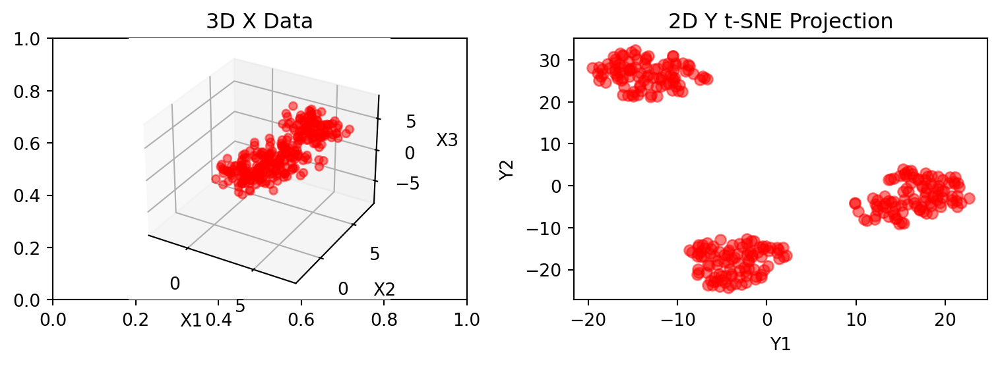
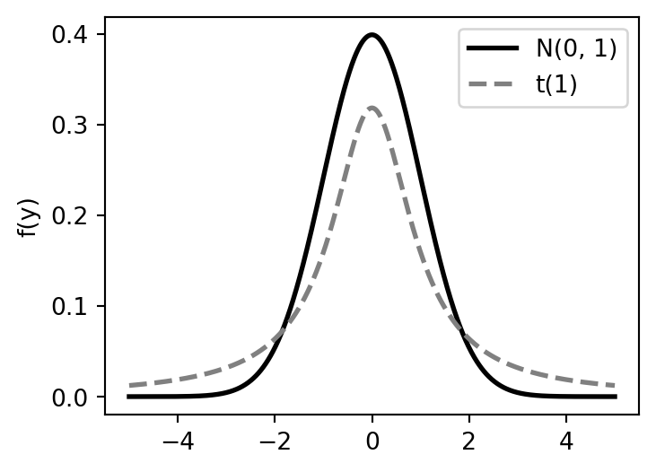

Introduction to Statistical Learning
Unsupervised Learning - Class 13
Giora Simchoni
gsimchoni@gmail.com and add #intro2sl in subject
Stat. and OR Department, TAU
Intro. to Unsupervised Learning
From Supervised to Unsupervised
Recall: each observation is made of a vector \(x \in \mathcal{X}\) (for example \(x \in \mathbb{R}^p\)) and a scalar \(y\)
Our goal is to build a model of the relationship between \(x\) and \(y\): \[y \approx f(x)\]
IID assumption: each pair \((x_i, y_i)\) is drawn indepednently from some distribution \(P_{x,y}\)
A modeling approach takes \((X, y)\) as input and outputs a prediction model \(\hat{f}(x)\)
In prediction: we get a new value \(x_0\) and predict \(\hat{y}_0 = \hat{f}(x_0)\).
How good is our prediction? We typically define a loss function \(L(y,\hat{y})\) and the quality of the model is \(\mathbb{E}_{x_0,y_0}(L(y_0, \hat{y}_0))\)
What if there is no \(y\)?
Unsupervised Learning
Now: each observation is made of a vector \(x \in \mathcal{X}\) (for example \(x \in \mathbb{R}^p\))
IID assumption: each observation \(x_i\) is drawn indepednently from some distribution \(P_{x}\)
Our goal is to learn distrubution \(P_{x}\) (or properties of it)
“without a supervisor”
- Example: Clustering = Finding modes of \(P_{x}\) with high density
- If we do find them, maybe \(P_{x}\) can be represented by a mixture of simpler densities?
K-means Clustering
How to evaluate a partition?
Assume \(K\) clusters are given
\(C(i) = k\) is some function assigning cluster \(k \in \{1, \dots, K\}\) to observation \(i \in \{1, \dots, n\}\)
\(d(x_i, x_j)\) is a distance metric for pair \(i, j\), e.g. Euclidean
We wish to minimize the extent to which observations assigned to the same cluster tend to be close to one another
The “within cluster” scatter/loss: \[W(C) = \frac{1}{2}\sum_{k = 1}^K \sum_{C(i) = k} \sum_{C(j) = k} d(x_i, x_j)\]
Equivalent to maximizing \(B(C) = \frac{1}{2}\sum_{k = 1}^K \sum_{C(i) = k} \sum_{C(j) \neq k} d(x_i, x_j)\)
Can we go over all possible \(C(i)\) to find the global minimum?
Road to K-means
Euclidean distance: \(d(x_i, x_j) = \sum_{m=1}^p (x_{im} - x_{jm})^2 = ||x_i - x_j||^2\)
Can show that: \(W(C) = \frac{1}{2}\sum_{k = 1}^K \sum_{C(i) = k} \sum_{C(j) = k} ||x_i - x_j||^2 = \sum_{k = 1}^K n_k \sum_{C(i) = k} ||x_i - \bar{x}_k||^2\)
\(\bar{x}_k \in \mathbb{R}^p\) being the mean in cluster \(k\), and \(n_k\) number of observations in cluster \(k\)
But for any set of observations \(S\), which \(m\) would minimize \(\sum_{i \in S} ||x_i - m||^2\)?
Thus, the final goal of K-means: \[\min\limits_{C, m_1, \dots, m_K} \sum_{k = 1}^K n_k \sum_{C(i) = k} ||x_i - m_k||^2\]
K-means
Start with initial guess for \(m_1, \dots, m_K\)
Assign each observation to the closest cluster mean. That is: \[C(i) = \arg\min\limits_{k = 1,\dots, K} ||x_i - m_k||^2\]
Update means \(m_1, \dots, m_K\). That is the centroids: \[m_k = \frac{\sum_{C(i) = k}x_i}{n_k}\]
Repeat 1 and 2 until \(C(i)\) doesn’t change
Convergence is guaranteed (steps 1 and 2 can only reduce \(W(C)\))
Global optimum is NOT guaranteed
Can try many different initial starting points
K-means Demo: Initial Guess
K-means Demo: Iteration 1

K-means Demo: Iteration 2

K-means Demo: Iteration 3

Some issues with K-means
Limited to Euclidean distance
Need to always specify \(K\)!
How to choose \(K\)?
Prefers separable spherical clusters (Gaussian)
- Bad with unequal densities, unequal cluster sizes
No concept of outliers
- See DBSCAN for an alternative
Dimensionality Reduction
Dimensionality Reduction
We have \(n\) observations in \(p\) dimensions: \(X_{n \times p}\)
Why would we want to reduce the data dimensionality to \(q \ll p\) dimensions?
- EDA:
- Visualize the data (2-d or 3-d visualizations)
- Identify important dimensions which summarize the data well
- Speed-up/Improve/Enable machine-learning algorithms (PCR)
- Clustering after dimensionality reduction
- Generative modeling - see later
- EDA:
Naive way: select \(q\) out of the original \(p\) dimensions (best subset)
Less Naive way: Look for interesting “projections”:
- linear/non-linear combinations of features
A non-standard motivation (I)
- We are given:
- An encoder \(g(X) = Xw\), where \(w \in \mathbb{R}^{p \times 1}\) is a vector with \(\|w\|=1\)
- A decoder \(f(u) = uw^T\), where \(u \in \mathbb{R}^{n \times 1}\)
- The reconstructed matrix is therefore: \(\hat{X} = f(g(X)) = (Xw)w^T = Xww^T\)
- Goal: find \(w\) that minimizes the reconstruction error \(\|X - \hat{X}\|^2_F\)
- \(\|A\|^2_F = \sum_{i = 1}^m \sum_{j = 1}^n = a_{ij}^2\) is the squared Frobenius norm, the sum of squared elements of any real matrix \(A\)
- Also: \(\|A\|^2_F = \text{Tr}(AA^T)\)
- \(w = \arg\min_{w: \|w\|=1}\text{Tr}((X - Xww^T)(X - Xww^T)^T)\)
A non-standard motivation (II)
\[w = \arg\min_{w: \|w\|=1}\text{Tr}((X - Xww^T)(X - Xww^T)^T)\]
\[\text{Tr}((X - Xww^T)(X - Xww^T)^T)\]
\[= \text{Tr}((X - Xww^T)(X^T - ww^TX^T))\]
\[= \text{Tr}(XX^T - Xww^TX^T - Xww^TX^T + Xww^Tww^TX^T)\]
\[= \text{Tr}(XX^T - Xww^TX^T - Xww^TX^T + Xww^TX^T)\]
\[= \text{Tr}(XX^T) - \text{Tr}(Xww^TX^T)\]
\[\Rightarrow w = \arg\max_{w: \|w\|=1}w^TX^TXw\]
PCA Dimensionality Reduction
PCA: the “standard” motivation
- Goal: Find the \(q\) direction(s) with the most dispersion
- Center \(X\)’s columns
- First direction: \(w_1 = \arg\max_{w_1:\|w_1\| =1} \|Xw_1\|^2 = \arg\max_{w_1:\|w_1\| =1}w_1^TX^TXw_1\)
- Second direction: \(w_2 = \arg\max_{\|w_2\| =1, w_2^Tw_1 = 0}w_2^TX^TXw_2\)
- Can keep going looking for new directions
- Assuming \(p < n\), up to \(p\) principal directions can be found this way, stack them into a \(p \times q\) “loadings” matrix \(W\)
- Data with reduced dimensionality: \(T_{n \times q} = X_{n \times p}W_{p \times q}\) taking only the first \(q\) principal directions
But PCA solution also minimizes the reconstruction error of a linear encoder/decoder system!
Eigendecomposition: Reminder
A non-zero vector \(\mathbf{v}\) is an eigenvector of a square \(p \times p\) matrix \(\mathbf{A}\) if it satisfies: \[\mathbf{A}\mathbf{v} = \lambda\mathbf{v},\] for some scalar \(\lambda\).
Then \(\lambda\) is called the eigenvalue corresponding to \(\mathbf{v}\).
Geometrically speaking, the eigenvectors of \(\mathbf{A}\) are the vectors that \(\mathbf{A}\) merely elongates or shrinks, and the amount that they elongate/shrink by is the eigenvalue
An eigendecomposition of \(\mathbf{A}\) is then: \(\mathbf{A} = \mathbf{V}\mathbf{\Lambda}\mathbf{V}^{-1}\)
where \(\mathbf{V}\) is the square \(p \times p\) matrix whose \(j\)-th column is the eigenvector \(\mathbf{v}_j\) of \(\mathbf{A}\), and \(\mathbf{\Lambda}\) is the diagonal matrix whose diagonal elements are the corresponding eigenvalues, \(\mathbf{\Lambda}_{jj} = \lambda_j\)
If \(\mathbf{A}\) is real and symmetric, \(\mathbf{V}\) is orthogonal, \(\mathbf{A} = \mathbf{V}\mathbf{\Lambda}\mathbf{V}^T\) and \(\lambda_j\) are real scalars
If \(\mathbf{A}\) is also positive semidefinite (PSD), then \(\lambda_j \ge 0\)
Calculating Principal Components
Look again at the PCA problem: \(w_1 = \arg\max_{w_1:\|w_1\| =1} \|Xw_1\|^2\)
Using Lagrange multiplier \(\lambda_1\): \(\max_{w_1}{w_1^TX^TXw_1} + \lambda_1(1 - w_1^Tw_1)\)
Take derivative with respect to \(w_1\), compare to 0: \[2X^TXw_1 - 2\lambda_1w_1 = \mathbf{0} \Rightarrow X^TXw_1 = \lambda_1w_1\]
So \(w_1\) must be an eigenvector of the square, real, symmetric, PSD \(X^TX\) matrix, and \(\lambda_1\) its eigenvalue!
Which eigenvalue and eigenvector?
So we’re looking for the set of \(W_{p \times q}\) eigenvectors \(\mathbf{V}_q\) of \(X^TX\) with their corresponding eigenvalues \(\lambda_1, \dots, \lambda_q\) ordered from largest to smallest
t-SNE Dimensionality Reduction
PCA Limitations
- Linear mapping (encoder/decoder)
- Squared reconstruction error: “punishes” more large differences in \(\|X - \hat{X}\|^2_F\)
- Focus on preserving global structure
- No probabilistic meaning?
t-Distributed Stochastic Neighbor Embedding

- Non-linear mapping
- Focus on preserving local structure through pairwise similarites:
- close observations in high dimension should likely be close in low dimension
- distant observations in high dimension should likely be distant in low dimension
- Specifically designed for visualization (2-D, 3-D)
- Probabilistic meaning
t-SNE: How to define close/distant? (I)
- In high dimension (\(p\)) with a Gaussian kernel:
- Let \(\mathbf{x}_1, \dots, \mathbf{x}_n\) be the data rows (each \(\mathbf{x}_i \in \mathbb{R}^p\))
- \(p_{j|i} = \frac{\exp(-\|\mathbf{x}_i - \mathbf{x}_j\|^2 / 2\sigma^2_i)}{\sum_{k\neq i}\exp(-\|\mathbf{x}_i - \mathbf{x}_k\|^2 / 2\sigma^2_i)}\)
- Notice that \(p_{j|i} \in [0, 1]\) and \(\sum_j p_{j|i} = 1\)
- Set \(p_{i|i} = 0\)
- “Symmetrize”: \(p_{ij} = \frac{p_{j|i} + p_{i|j}}{2n}\) (makes sense if \(p_i = \frac{1}{n} \space \forall i\))
- This \(n \times n\) table is computed once
- Why not model \(p_{ij}\) directly?
- How to get \(\sigma_i\) not shown here, but:
- for observation \(i\) in a dense area, want to be specific \(\Rightarrow\) need small \(\sigma_i\)
- for observation \(i\) in a sparse area, need large \(\sigma_i\)
t-SNE: How to define close/distant? (II)
- In low dimension (\(q = 2, 3\)) with a \(t(1)\)-distribution kernel:
- Define \(\mathbf{y}_1, \dots, \mathbf{y}_n\) the low-dimensional mappings (each \(\mathbf{y} \in \mathbb{R}^q\))
- If \(Z \sim t(1)\), then: \(f(z) = \frac{1}{\pi(1+z^2)}\) (also called Cauchy)
- Here, no need to go through conditional probs
- \(q_{ij} = \frac{(1 + \|\mathbf{y}_i - \mathbf{y}_j\|^2)^{-1}}{\sum_{k}\sum_{k\neq l}(1 + \|\mathbf{y}_k - \mathbf{y}_l\|^2)^{-1}}\), and set \(q_{ii} = 0 \space \forall i\)
- Why \(t(1)\)? See the “crowding problem”.

t-SNE: How to compare \(p\) and \(q\) distributions?
- The Kullback-Leibler (KL) divergence is a distance metric from distribution \(p\) to \(q\): \[KL(p||q) = \sum_{i}\sum_{j}p_{ij} \log\frac{p_{ij}}{q_{ij}}\]
- At each iteration of t-SNE we walk a step down the gradient of \(KL(p||q)\) with respect to every \(\mathbf{y}_i\)
t-SNE: at high level
Prepare \(p_{ij}\) table with Gaussian kernel and \(\sigma_1, \dots, \sigma_n\)
Sample initial low-dimensional mappings \(Y^{(0)} = \mathbf{y}^{(0)}_1, \dots, \mathbf{y}^{(0)}_n\)
For \(t = 1\) to \(T\) do:
Compute \(q_{ij}\) with \(t(1)\) kernel
Gradient step: \(\mathbf{y}_i^{(t)} = \mathbf{y}_i^{(t - 1)} - \alpha \cdot \frac{\partial KL}{\partial \mathbf{y}_i}\)
- \(\frac{\partial KL}{\partial \mathbf{y}_i} = 4 \sum_j (p_{ij} - q_{ij})(\mathbf{y}_i - \mathbf{y}_j)(1+ \|\mathbf{y}_i - \mathbf{y}_j\|^2)^{-1}\)
- Modifications exist for very large datasets, e.g. consider only local neighborhood for \(i\)
Example: MNIST dataset
7000 X 10 digits (\(n = 70000\)), hand-written, in 28 X 28 pixels (\(p=784\))
PCA vs. t-SNE
PCA as a Generative Model
Probabilistic PCA (I)
- It is not true that there is nothing “probabilistic” about PCA!
- Suppose every data row \(\mathbf{x}_i\) was generated by: \[\mathbf{x}_i = W\mathbf{u}_i + \mathbf{\mu} + \mathbf{\varepsilon}_i\]
- \(\mathbf{u}_i \in \mathbb{R}^q\) is a latent vector from \(\mathcal{N}(\mathbf{0}, I_q)\)
- \(W\) is a \(p \times q\) matrix
- \(\mathbf{\mu} \in \mathbb{R}^p\) is a mean vector for \(p\) features
- \(\mathbf{\varepsilon}_i \in \mathbb{R}^p\) is random noise from \(\mathcal{N}(\mathbf{0}, \sigma^2I_p)\)
\(\Rightarrow \mathbf{x}_i \sim \mathcal{N}(\mathbf{\mu}, \Sigma)\), where: \(\Sigma = WW^T + \sigma^2I_p\)
It’s likelihood: \(f(\mathbf{x}_i) = \frac{1}{(2\pi)^{p/2}|\Sigma|^{1/2}}\exp\left(-\frac{1}{2}(\mathbf{x}_i - \mu)^T\Sigma^{-1}(\mathbf{x}_i-\mu)\right)\)
Probabilistic PCA (II)
- After some algebra, the log-likelihood of our entire data \(X = \mathbf{x}_1, \dots, \mathbf{x}_n\): \[\ell(\mathbf{\mu}, W, \sigma^2|X) = -\frac{n}{2}\left[p\ln(2\pi) + \ln(|\Sigma|) + \text{Tr}(\Sigma^{-1}S)\right]\]
- where \(S = \frac{1}{n}\sum_i (\mathbf{x}_i - \mu)(\mathbf{x}_i - \mu)^T\) is the covariance matrix of \(X\)
- The maximum likelihood estimate (MLE) for \(W\): \[W_{MLE} = \mathbf{V}_q(\mathbf{\Lambda}_q - \sigma^2I_q)^{1/2}\mathbf{R}\]
- where the columns of \(\mathbf{V}_q\) are eigenvectors of \(S\), with corresponding \(q\) largest eigenvalues in the diagonal matrix \(\mathbf{\Lambda}_q\), and \(\mathbf{R}\) is a \(q\times q\) arbitrary rotation matrix
- In the limit \(\sigma^2 \to 0\) this solution is equivalent to PCA!
The many faces of PCA
Why is this so important?
- PCA as an eigenvalue problem to maximize dispersion of projection
- PCA as an SVD problem
- PCA as an encoder/decoder problem to minimize reconstruction error
- PCA as a generative model to maximize likelihood
- Unsupervised learning can be used to generate new data:

- PCA is the ancestor of many generative models